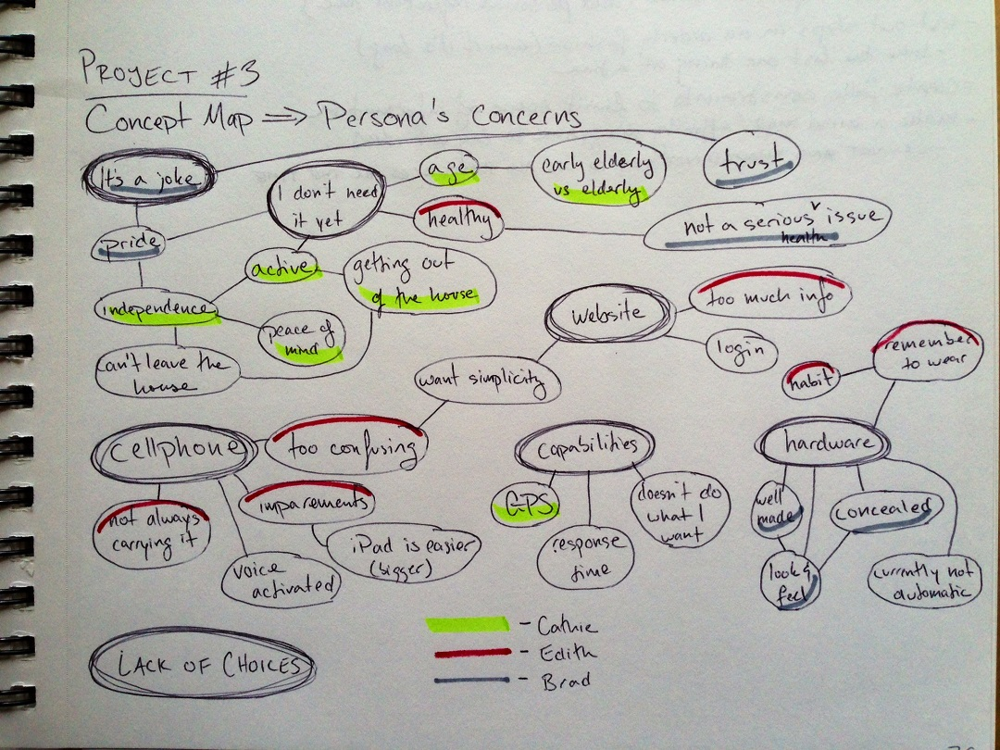

LifeAlert Process

Based on user feedback, we built a concept map to help identify users' core concerns.
Comparison chart of user feedback on the original site and brand perception. I sent out both an initial perception questionnaire and a follow-up survey containing our prototype, both from people who had responded to the initial survey as well as from those who hadn't. The information from our first perception survey is what we took to the instructors to back up our request to change the scope of the project to a full rebranding of the service.
Our initial ideas for the site were very ambitious - we wanted to create a whole online billing process, as well as a user admin section where individuals with LifeAlert could log in and change their settings. Some sketches were done for these ideas, but they were quickly sidelined due to time constraints.